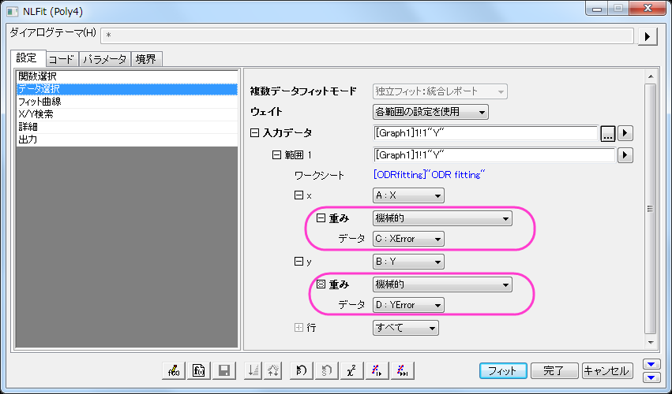
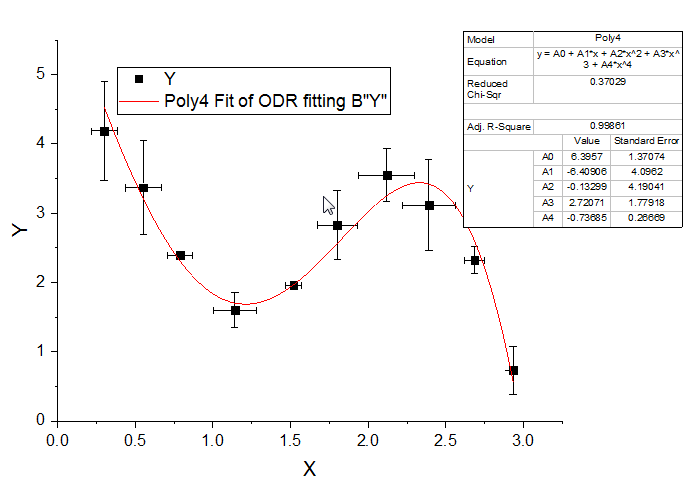

直交距離回帰を使用した非線形曲線フィット
Nonlinear-fitting-using-orthogonal-regression
概要
指数データに非線形曲線フィットを実行するとき、データに含まれる独立変数と従属変数の両方のエラーを考慮する必要があります。Originでは、直交距離回帰(ODR)を使用して、陽関数でも陰関数でもフィットできます。このチュートリアルでは、Xの誤差とYの誤差のあるデータで組み込み関数と共にODRを使用して非線形曲線フィットを実行します。
必要なOriginのバージョン: Origin 9.1 以降
学習する項目
XとYの両方の誤差を含んだデータに直交距離回帰を使用して非線形曲線フィットを行う方法を紹介します。
サンプルとステップ
- ワークブックを新しく作成します。ヘルプ: フォルダを開く: サンプルフォルダを選択して、サンプルフォルダを開きます。このフォルダ内のCurve
FittingサブフォルダにあるODR fitting.dat ファイルを探します。空のワークシートにファイルをドラッグアンドドロップしてインポートします。
- ロングネームがXError となっている列を選択し、列のXY属性の設定：Xエラーバーと操作してXのエラー列にします。
- ロングネームがYErrorとなっている列を選択し、列のXY属性の設定：Yエラーバーと操作してYのエラー列にします。
- 4つの列全てを選択し、作図：基本の2Dグラフ：散布図と操作してXとYのエラーバー付散布図を作図します。
- 解析：フィット：非線形曲線フィットと操作してNLFit ダイアログを開きます。
- 関数選択項目で、カテゴリではPolynomial、関数ではPoly4、アルゴリズムでは直交距離回帰を選択します。

- XとYの誤差列はステップ3と4で設定したため、直交距離回帰がアルゴリズムで設定されたとき、自動的にこれらの情報がXとYの重みとして換算され、適用されます。データ選択項目を開き、入力データのなかでそれぞれxとy開くと確認できます。

- フィットボタンをクリックし、表示される確認メッセージダイアログでいいえのラジオボタンを選択します。フィット結果は以下のようになります。

ODRアルゴリズムの詳細やLevenberg Marquardt (L-M) アルゴリズムの詳細はこちらのページを参照してください。直交直線回帰を陰関数にフィットしている例としてはこちらをご覧ください。